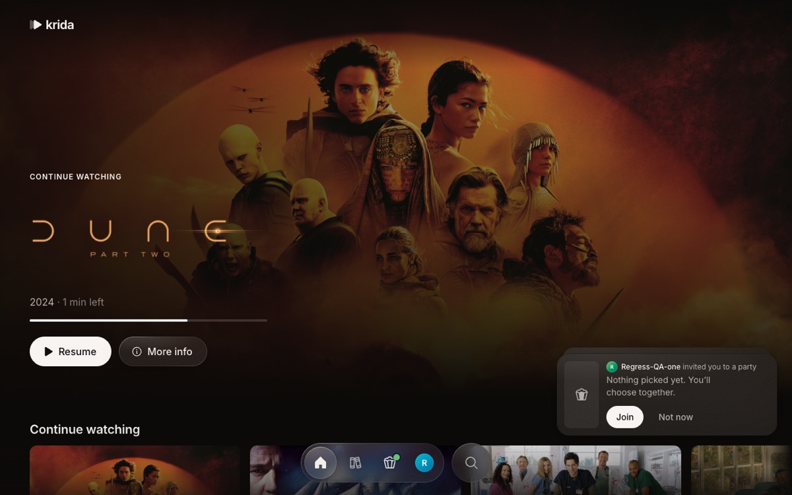
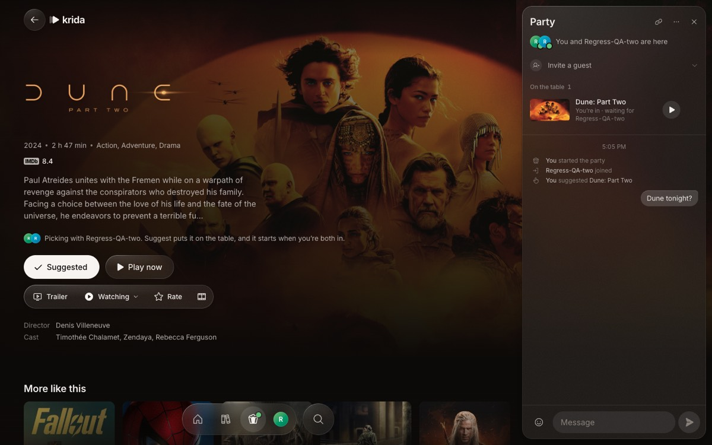
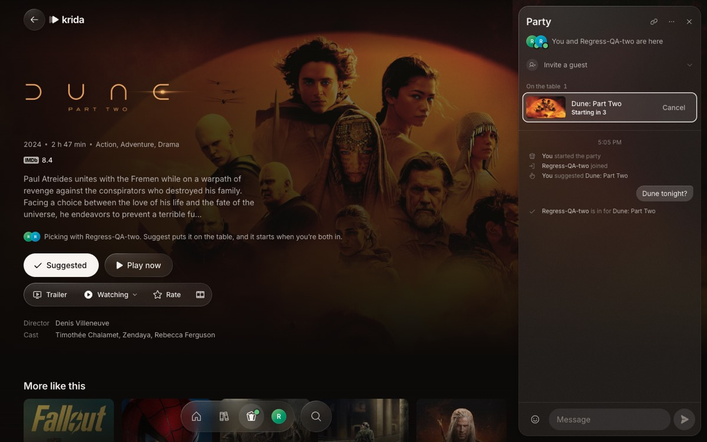
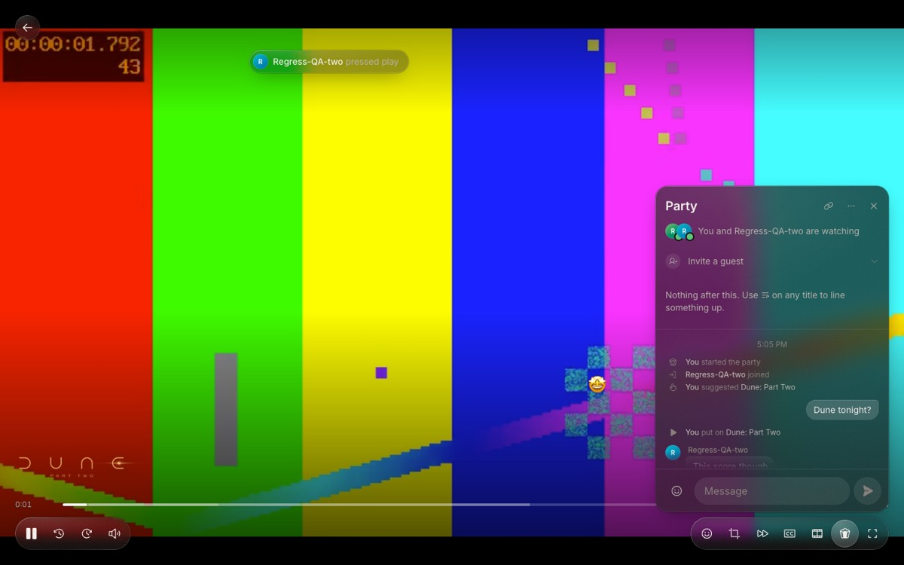
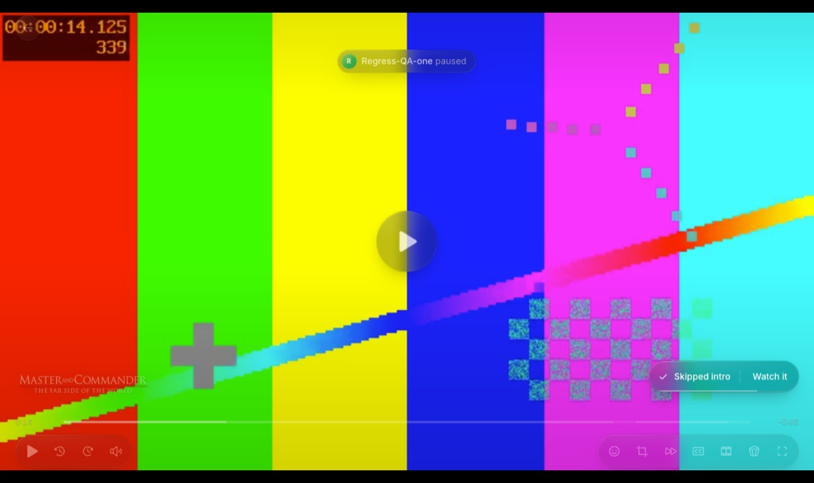
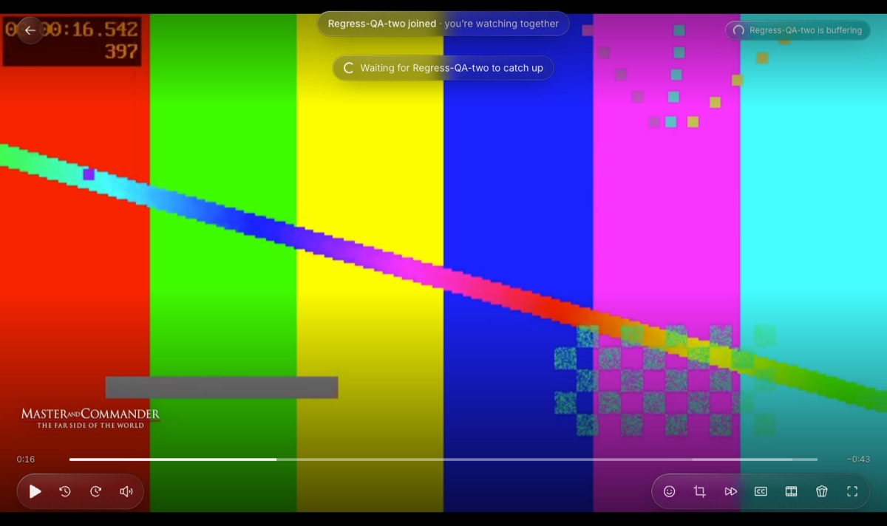
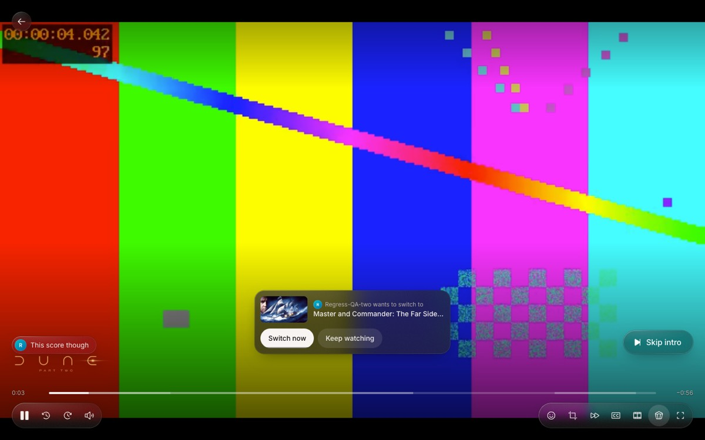
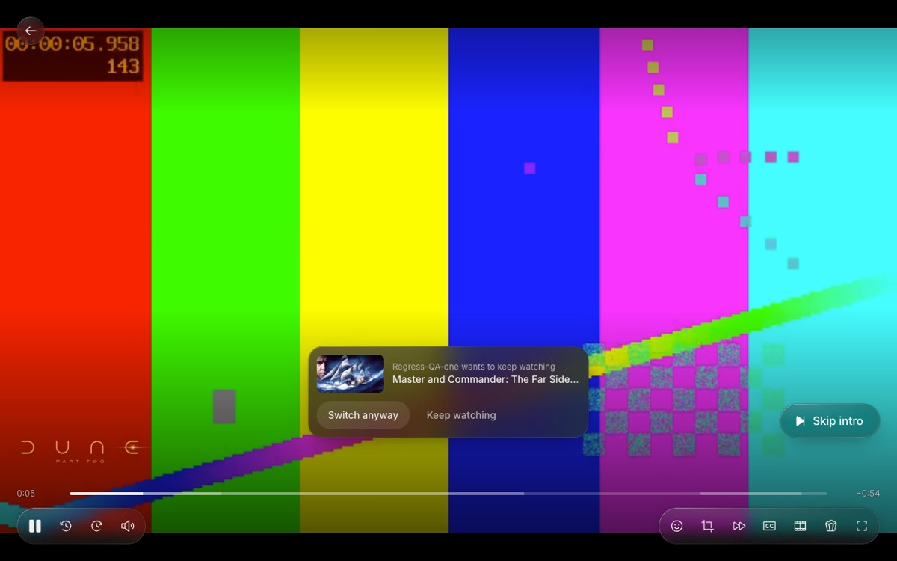

A party is one shared clock in Convex
Every screen reads the same rooms document. Its playback anchor says “at server time T the film was at P, playing or paused”, and each player works out where it should be from that.
Krida has no WebSocket of its own, no peer-to-peer link and no “host’s player is the truth”. Convex’s live query pushes the room to every member within a moment of each write, and that is the whole transport.
Guess first: Ben’s phone clock runs 20 seconds fast, and he joins 10 minutes into a film. Where does his picture start?
Answer: exactly where yours is
The player never trusts the device clock. On open it calls rooms.clock four times, keeps the sample with the shortest round trip, and stores offset = server − (t0 + t1) / 2. Then the target is position + (Date.now() + offset − anchorAt) / 1000. The 20 seconds cancel out. Before that measure lands it borrows the app-wide offset from serverClock.ts, which most screens have already measured.
Five words carry the rest
- room
- One
roomsrow.kindissolo(you pressed Play) orparty(a shared space that outlives any one title). Solo turns into party when someone else joins. - anchor
playbackon the room:{playing, position, anchorAt}. Where the film is now is derived, never stored.- seq
- A counter that goes up by one on every playback write. Clients use it to tell their own action coming back from someone else’s.
- heartbeat
- A mutation each member sends every 5 s (10 s while browsing a playing party). It sets
lastSeenAt,bufferingandwatching. - leader
- Worked out on every screen, never stored: the first watcher by id who isn’t buffering. It sends the buffering holds and the intro skips, so they happen once.
Starting sends each friend an invite
“Watch with Ben” or the Start sheet calls rooms.createParty. It makes an idle room with no title, adds you as a member, leaves any other party you were in, and inserts one invites row per friend.

InviteListener watches invites.mine and plays a chime.
- Join calls
invites.respondthenrooms.join, which marks the invite accepted and writes a “joined” event intomessages. - An invite nobody answers expires after 10 minutes. A newer invite to the same person replaces it.
- The host can also mint a guest link (
profiles.inviteTemporary): a temporary profile that lasts 24 hours and can enter only that room. At most 8 live links per room.
Everyone in starts a countdown
While the room is idle, Suggest puts a title “on the table” (rooms.suggest, up to 20). Each suggestion keeps inIds, the people who are in for it; suggesting one already there counts as being in.

starting = {suggestionId, at: now + 3 s}.The check lives in one function, maybeStart in convex/lib/rooms.ts. It runs after every suggest, vote and lobby heartbeat:
- Only from
idle, and only with 2 or more people present. Alone, “Play now” is the way. - “Present” means not left,
watching, and heard from in the last 20 s. Someone browsing a picking party counts as watching, so they still get a vote. - The first suggestion every present member is in for wins. The server schedules
startSuggestionfor 3 s later. - Cancel clears
startingand takes you out of that suggestion, or the countdown would just restart.
The newest Play job wins
Every way of putting a title on (countdown, Play now, an accepted switch, Up next, Retry, a new source) goes through startJob. It bumps jobId, sets status: "preparing", stops the clock at startAt, and schedules engine.prepare.
jobId. setStep and setReady drop anything from an older job, so a slow build can never overwrite a newer pick.While preparing, the room shows step (“Finding sources…”, “Adding to TorBox…”, “Starting stream…”) to everyone. setReady leaves the clock paused with action: "ready" and by: requestedBy: whoever asked presses play for the room once their video can play.
The stream is picked for the room, not one person: screenFor chooses SDR if anyone present has an SDR screen, since HDR comes out dark there.
Players jump on changes, nudge drift
useRoomSync in src/features/player/playbackSync.ts keeps one <video> on the anchor in two ways.
When the room changes, jump if more than 1 s off
When a new seq from someone else arrives, the player seeks if it’s over 1 s off the target, then plays or pauses to match. If the browser blocks autoplay, it shows a tap-to-play button instead.
Every second while playing, correct the drift
The 1-second tick in playbackSync.ts. A party always plays at 1×; a speed you pick applies only alone.
Your own press doesn’t bounce you back
When you press Pause, your video pauses at once and only then does the mutation go out. When the room comes back, the player has to know it’s your echo, not something to apply again.
| Step | Ana | Room | Ben |
|---|---|---|---|
| 1 | video pauses; pending = 43 | seq 42, playing | playing |
| 2 | control(pause, 724, at) | seq 43, paused at 724, by K | |
| 3 | seq 43 = pending, by me: ours, skip | seq 43 by K: theirs, pause, seek to 724 | |
| 4 | note: “Ana paused” |
at is the press time on the server clock, clamped to between 3 s ago and now, so a slow request can’t drag everyone back. If the echo hasn’t arrived in 3 s, the client gives up and follows the room.


The party waits for a stall
Without a hold, a stalled viewer falls behind, then seeks ahead to catch up and lands on a part TorBox hasn’t converted yet. So the leader stops the room for them (holdStep in src/features/player/together.ts):
- Anyone’s heartbeat says
bufferingfor 2.5 s. The leader pauses its own video and sendswait. Every screen pauses. - Everyone loaded: 0.6 s later the leader sends
resumefrom the same spot. - Still stalled after 20 s: the leader sends
move on. That person’s stalls don’t hold the room again for 30 s.

Auto-skipping intros and recaps uses the same leader, and only when every member has that setting on. Only playback running into an intro skips it; seeking into one never does.
Changing titles asks whoever is watching
Play on another title mid-film calls requestSwitch. Alone, or between titles, it plays at once; otherwise it stores a switchRequest that the others answer within 30 s.

startJob for the asker’s title.
playNow).Up next is one slot, then the next episode
The order is: Autoplay off for this title (stopAfter), else the one lined-up title (next), else the next episode. Every client may call advance at the credits, but it only acts while the room is still on fromVideoId, so the first call wins.
After 3 titles in a row start on their own, with no pause, seek or chat in between (autoStreak), the player asks “Still watching?” instead of counting down.
Leaving: timers do the cleanup
Closing a tab never sends “left”. Presence is all heartbeats and a sweep that books itself every 2 minutes while any room is open, plus a 15-minute cron as a backstop.
| Rule | Time | Where |
|---|---|---|
| Heartbeat from the player, lobby or a preparing room | 5 s | useProgress.ts, party.tsx |
| Heartbeat while browsing during a film | 10 s | party.tsx |
| Counts as present (votes, switch asks) | 20 s | PRESENT_MS |
| Last person out: room closes unless someone returns | 30 s | CLOSE_GRACE_MS |
| Silent this long: swept out, “left the party” | 10 min | AWAY_LEAVE_MS |
| Nobody watching or picking: party ends | 30 min | IDLE_CLOSE_MS |
| Swept laptop that wakes can rejoin within | 12 h | PARTY_TTL_MS |
| Invite unanswered | 10 min | INVITE_TTL_MS |
| Guest link and temporary profile | 24 h | TEMPORARY_PROFILE_TTL_MS |
When the last person leaves, nobody else in the player means the clock stops (pauseIfNobodyWatching), so whoever returns carries on from where it was. If the host leaves, the earliest-joined permanent profile becomes host; guests never host.
Mistake: thinking the host drives playback
Any member can pause, seek, suggest, switch or go back to picking; the server only checks membership. hostId matters for two things: minting guest links, and turning a solo room back to solo when the friend leaves.
The one role with extra duties is the leader. Each screen computes it from the same member list, so every screen agrees without a vote.
Check yourself
Both press something at the same instant: Ana pauses, Ben seeks to 30:00. What does the room end on?
Convex runs the two mutations one after the other, so seq goes 42 → 43 → 44 and the later write wins on both screens. Say the pause lands first. Ana skips seq 43 as his own echo, then gets seq 44 by Ben, which is “theirs”. Ben’s video was still playing when he seeked, so his write says playing at 30:00, and both screens end up playing from 30:00.
Ana and Ben are both in for Dune, then Ben walks off to the kitchen with his phone locked. Does the countdown still start for a third suggestion Ana adds?
Ben stops heart-beating; after 20 s he isn’t present. maybeStart needs 2 or more present, so alone Ana gets no countdown and uses Play now. When Ben’s phone wakes, its next lobby heartbeat calls maybeStart again.
You pick Source 3 while Source 1 is still “Adding to TorBox…”. Can Source 1 finish and win?
No. chooseSource runs startJob, which bumps jobId. When the old build calls setStep or setReady with the old id, the mutation returns false or does nothing, and the old action stops with Superseded.
Where the code lives
| File | What it owns |
|---|---|
convex/rooms.ts | Every party mutation and query: create, join, leave, heartbeat, control, suggest, vote, switch, Up next, sweep |
convex/lib/rooms.ts | The rules: timers, startJob, maybeStart, presentMembers, passHost, closeRoom, screenFor |
convex/invites.ts, messages.ts | Invites with expiry; chat, reactions and event lines (last 60, at most 12 reactions) |
convex/engine.ts | prepare and warm: sources, TorBox, the stream |
src/features/player/playbackSync.ts | Clock offset, applying the anchor, drift correction, echoes |
src/features/player/together.ts | Leader, buffering hold, auto-skip |
src/features/player/upNext.ts, Watch.tsx | Up next countdown and Still watching; the watch page joining, leaving and choosing player or preparing |
src/features/party/ | The UI: panel, lobby table, chat, reactions, invites, switch prompt, the party following you around the app (party.tsx) |
How this was checked
Read against main at 0f76956 on 27 Oct 2026. The screenshots come from this checkout’s QA app (local backend, stand-in providers, a one-minute test video), driven as two profiles in headless Chrome.
Ran: e2e-party-sync, 14 of 14 checks passed
Start in step (both at 13.90 s), pause reaches B with a note, seek to 0:40 reaches B, B’s play resumes A (42.98 vs 43.02 s), reload, then a hold for B’s 7-second segments with A’s picture stopped at 16.62 s and both resuming in step without B jumping ahead.
Ran: a screenshot script, 6 of 6 checks passed
Invite and join, a suggestion waiting for B, B’s “I’m in” starting the countdown, both landing in the player and playing, chat and a reaction in the player, and B’s Play on another title asking A, then A’s Keep watching reaching B.
Partly ran: e2e-party-panel stopped after 3 of 11 steps
Passed: starting an empty party docks the panel, joining opens the panel, Suggest on a title page. It then timed out on Search results: this Mac’s .env.local has no TMDB_API_KEY or MDBLIST_API_KEY, so Search loads empty. That’s the environment, not the party code.
Not tested here: real streams, phones, the apps, timers
Real TorBox files, phone layouts, Krida for Windows (mpv) and Android in a party, guest links, and the 10-minute, 30-minute and 12-hour timers. Those statements come from reading the code.
Two comments disagree with the code
rooms.sweep says “Every minute”, and invites.forRoom says the sweep runs “once a minute”. SWEEP_EVERY_MS is 2 minutes, with a 15-minute cron behind it. Harmless, but worth fixing next time someone touches that file.